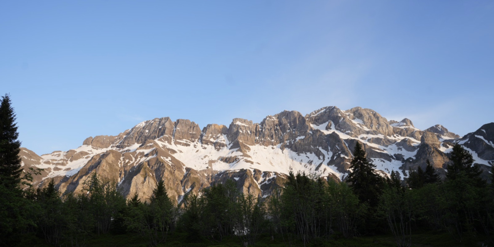

Louis PeruzziPortfolio créatif
What Inspire Me !
Mes réalisations en design et développement, et les créateurs qui m'inspirent au quotidien.
DécouvrirÀ propos
Je suis Louis. Je conçois des identités, des sites et des images, avec un faible pour la montagne, la vidéo de ski et les détails qui donnent du caractère. Ce site rassemble ce que j'ai réalisé et ce qui nourrit mon regard.
Réalisations
Projets d'école et personnels. Clique sur un projet pour voir le détail.
Ils m'inspirent
Inspirations
Les créateurs, chaînes et comptes qui nourrissent mon travail. Chaque carte ouvre leur page.